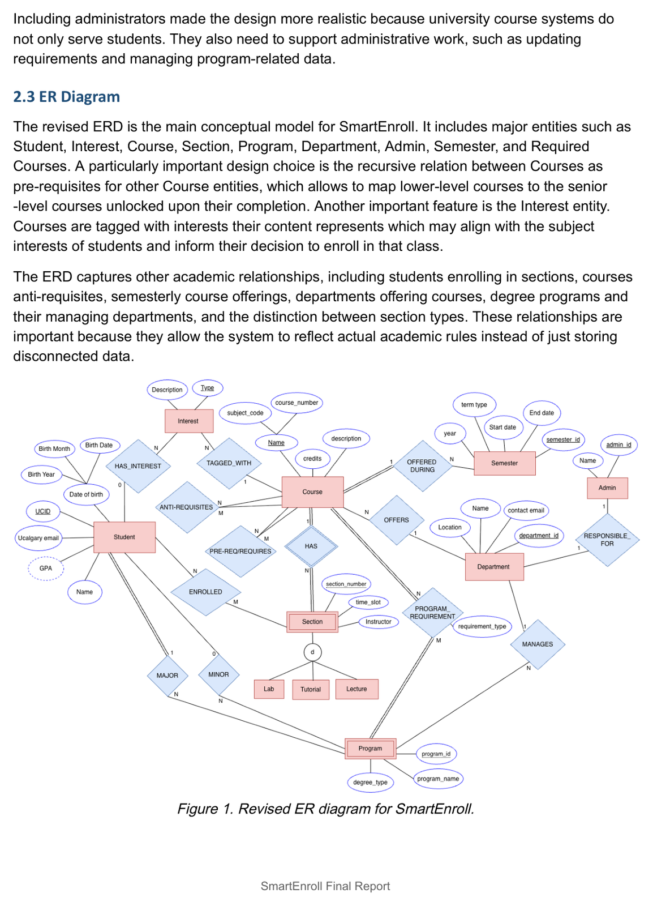

- Type
- Relational database system
- Team
- Three people
- My role
- Front-end lead
- Year
- 2025
- Stack
- MySQL, SQL, web front end
The problem
Before a student can enroll, they need four things at once: what their degree requires, what is offered this term, whether they meet the prerequisites, and whether the course fits what they actually want to study. That information lives in four different tools, so planning a semester is mostly manual cross-referencing, and it is where mistakes happen.
What we built
A database-backed planning system that centralises it. Students declare a major and minor, record completed courses, search by interest or eligibility, see their degree progress, and enroll in sections. Administrators maintain requirements and review enrollment. I led the front end, building the search, degree-progress, and enrollment screens that sit on top of the schema.

The decision that mattered
Making prerequisites a recursive relation on Course rather than a text field. It costs more to model, but it is what lets the system answer the question students actually have, not "are you eligible?" but "what do I need first, and what does it unlock?" A flat list could only ever say no.
Our first model would have made the degree-progress screen lie. Fixing it fixed an interface we had not yet built.
What I took from it
Data modelling is interface design done early. Every promise the UI makes has to be something the schema can answer, and the cheapest time to find out it cannot is while the diagram is still on paper.